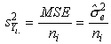
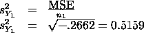
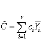
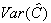
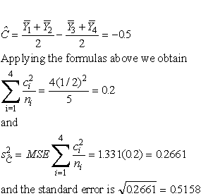

7.4. Comparisons based on data from more than two processes
7.4.2. Are the means equal?
7.4.2.6. |
Assessing the response from any factor combination |
Factor level mean example for a 4 level treatment (or 4 different
treatments)
Definition of contrasts and orthogonal contrasts
Confidence intervals for contrasts
Estimasting other linear combinations
Estimation of a Factor Level Mean With Confidence Bounds
An unbiased estimate of the factor level mean mi in the 1-way ANOVA model is given by:

The data in the accompanying table resulted from an experiment run in a completely randomized design in which each of four treatments was replicated five times.
| Total | Mean | ||||||
| Group 1 | 6.9 | 5.4 | 5.8 | 4.6 | 4.0 | 26.70 | 5.34 |
| Group 2 | 8.3 | 6.8 | 7.8 | 9.2 | 6.5 | 38.60 | 7.72 |
| Group 3 | 8.0 | 10.5 | 8.1 | 6.9 | 9.3 | 42.80 | 8.56 |
| Group 4 | 5.8 | 3.8 | 6.1 | 5.6 | 6.2 | 27.50 | 5.50 |
| All Groups | 135.60 | 6.78 | |||||
This experiment can be illustrated by the table layout for this 1-way ANOVA experiment shown below:
The resulting ANOVA table is
Since the confidence interval is two-sided, the entry a/2 value for the t-table is .5(1 - .95) = .025, and the associated degrees of freedom is N - 4, or 20 - 4 = 16.
From t-tables or a computer program we obtain t.025;16 = 2.120.
Next we need the standard error of the mean for group 1:

Hence, we obtain confidence limits 5.34 ± 2.120 (0.5159) and the confidence interval is
Definitions
A contrast is a linear combination of 2 or more factor level means with coefficients that sum to zero.
Two contrasts are orthogonal if the sum of the products of corresponding coefficients (i.e. coefficients for the same means) adds to zero.
Formally, the definition of contrast is expressed below, using the notation mi for the i-th treatment mean:
m1 - m2 has coefficients +1, -1As an example of orthogonal contrasts note the three contrasts defined by the table below, where the rows denote coefficients for the column treatment means.
m1 + m2 - 2m3 has coefficients +1, +1, -2.
These coefficients sum to zero.
1. The sum of the coefficients for each contrast is zero.As might be expected, contrasts are estimated by taking the same linear combination of treatment mean estimates. In other words:2. The sum of the products of coefficients of each pair of contrasts is also 0 (orthogonality property).
3. The first two contrasts are simply pair wise comparisons, the third one involves all the treatments.

Confidence Interval for a Contrast
An unbiased estimator for a contrast C is given by
The estimate of  is

for the one way ANOVA model under discussion.
Therefore, the 1-a confidence limits for C are:
Example 2
We wish to estimate, in our previous example, the following contrast:
The point estimate is:

For a confidence coefficient of 95 % and df = 20 - 4 = 16,
t.025;16 = 2.12. Therefore, the desired 95 % confidence
interval is -.5 ± 2.12(.5158) or
Estimation of Linear Combinations(-1.594, 0.594).
Sometimes we are interested in a linear combination of the factor level means that is not a contrast. Assume that in our sample experiment certain costs are associated with each group. For example there might be costs associated with each factor as follows:
Factor
Cost in $
1
3
2
5
3
2
4
1
The following linear combination might then be of interest:
Confidence limits for a linear combination C are obtained in precisely the same way as those for a contrast, using the same calculation for the point estimator and estimated variance.